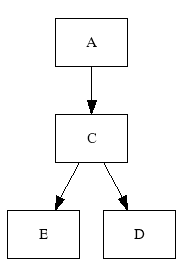

If you haven't done so, please read the Overview first.
Graph::Easy's layouter is responsible for converting a (internal) graph representation into a specific layout. Here are two example layouts produced from the same graph:

+---+ +---+ +---+
| A | --> | C | --> | D |
+---+ +---+ +---+
|
|
v
+---+
| E |
+---+
The layouter works mostly automatic and this chapter explains some of its inner workings. It might explain why certain outputs are generated in the way they are, and will also help you understand how to better influence the generated layout, which is discussed in the next chapter.
Note that the two output formats as_txt() (textual description) and
as_graphviz() (graphviz code) are not generated by the layouter,
they are merely dumps of the graph. In the case of graphviz code,
the actual layout will be performed by an external program, like "dot",
"neato" etc.
Overview
To generate a specific layout, the Graph::Easy layouter works in three phases:
- First, it categorizes the nodes and sorts them into groups according to their group information, as well as their rank.
- Then it creates chains of nodes, starting with nodes with as little incoming edges as possible, and then progressing to the other nodes. The idea is to find the longest consecutive chains of nodes as possible.
- In the last phase, the layouter places the individual nodes on a checkered plane, much like a chess board. Once a nodes and its successors are placed, it tries to find the paths between the nodes to generate the edge cells.
The first two stages influence the order how the nodes are processed in the third stage.
Due to finding the longest chains, the layouter can de-tangle the graph and lay it out
in a straight line, if possible.
Here are two examples, the first one from pre-v0.24, the second one laid out by v0.25.
You can see the difference the chain-finding code makes :)
+------------------------------+
v |
+---------+ +--------+ +--------+ +---------+
| Koblenz | <-- | Bonn | --> | Ulm | --> | Bautzen |
+---------+ +--------+ +--------+ +---------+
| | |
| | |
| v |
| +--------+ +--------+ |
+-----------> | Berlin | --> | Kassel | |
+--------+ +--------+ |
^ |
+-----------------------------+
+--------------------------------------------+
| v
+------+ +---------+ +---------+ +--------+ +--------+
| Bonn | --> | Ulm | --> | Bautzen | --> | Berlin | --> | Kassel |
+------+ +---------+ +---------+ +--------+ +--------+
| | ^
| | |
| v |
| +---------+ |
+--------> | Koblenz | ----------------------+
+---------+
Cells and placement
Unlike other packages, Graph::Easy works on an infinite big checkered board layout. Here are the first 7x3 cells with their coordinates:
........................................... : 0,0 : 1,0 : 2,0 : 3,0 : 4,0 : 5,0 : 6,0 : ........................................... : 0,1 : 1,1 : 2,1 : 3,1 : 4,1 : 5,1 : 6,1 : ........................................... : 0,2 : 1,2 : 2,2 : 3,2 : 4,2 : 5,2 : 6,2 : ...........................................
Each node can occupy one or more cells. Likewise, an edge going from one node to another can go via one or more cells. However, edges may only go in straight lines, but not diagonal.
Here is an example with two nodes and a short edge. Empty cells are grey, cells occupied by a node white and edge cells yellow:
........................................... : 0,0 : 1,0 : 2,0 : 3,0 : 4,0 : 5,0 : 6,0 : ........................................... :+---+: :+---+: : : : : :| A |: --> :| B |: 3,1 : 4,1 : 5,1 : 6,1 : :+---+: :+---+: : : : : ........................................... : 0,2 : 1,2 : 2,2 : 3,2 : 4,2 : 5,2 : 6,2 : ...........................................
Here is the same example with one more edge, this time with multiple cells. The new edge cells are colored lightblue:
........................................... : : : : : : : : : +--:-----:--+ : 3,0 : 4,0 : 5,0 : 6,0 : : | : : v : : : : : ........................................... :+---+: :+---+: : : : : :| A |: --> :| B |: 3,1 : 4,1 : 5,1 : 6,1 : :+---+: :+---+: : : : : ........................................... : 0,2 : 1,2 : 2,2 : 3,2 : 4,2 : 5,2 : 6,2 : ...........................................
Ports
As you can see from the example above, each cell has four ports, right, bottom, left and top of it. These directions are labeled East, South, West and North, accodingly. Ports are shown light purple here:
........................................... : : : : : : : : : 0,0 :North: 2,0 : 3,0 : 4,0 : 5,0 : 6,0 : : : : : : : : : ........................................... : :+---+: : : : : : :West :| A |: East: 3,1 : 4,1 : 5,1 : 6,1 : : :+---+: : : : : : ........................................... : : : : : : : : : 0,2 :South: 2,2 : 3,2 : 4,2 : 5,2 : 6,2 : : : : : : : : : ...........................................
So, if a node occupies exactly one cell and one cell has four ports, then there can only be four edges going from or to this node.
That is a serious limitation and to overcome it, nodes can occupy more than one cell. Nodes are grown automatically to multiple cells when they need to be bigger than one cell.
You can also explicitely specify how many rows/columns a node should at least have, which is explained in detail in the next chapter.
A multi-celled node has more than four ports. To create more strict layouts it is possible to specifiy at which port an edge should start or end. The details for that can be found in the next chapter.
Edge pieces
There are 11 basic edge cells, e.g. this one goes to eleven :)
......................... : : | : | : : :-----: | :--+--: : : : | : | : : ......................... : : | : | : : : +--: +--:--+ :--+ : : | : : : | : ......................... : : | : | : | : : : v : | : | : :--+--:--+--:->+ : +<-: : ^ : : | : | : : | : : | : | : .........................
Each of these edge pieces can be combined with (up to four) starting points (rendered invisible
for vertical edges, a space for horizontal edges) and (up to four) end points (rendered as an arrow
head). Not all combinations make sense, but they are automatically choosen to make the best
use of the available space.
Here are some of the possible combinations with an horizontal edge shown:
......................... : : : : : : --> :---> : ----: <---: : : : : : ......................... : : : : : : <-> : --- :-----: : : : : : : .........................
In addition, there are now four self-loop edge pieces. These are used on connections running from one node back to the same node:
......................... : : : : | ^ : : +- : -+ : : +-+ : : | : | : : : : +> : <+ : +-+ : : : : : v | : : .........................
These four pieces always have exactly one end and one start point on them, although they can have zero, one or two arrows, depending on whether the edge is undirected, normal or bidirectional.
Edge labels
Vertical, horizontal and self-loop edge pieces can also have an attached label. Where the label appears is automatically selected by they layouter.
Edge crossings
Edges can cross themselves, although the layouter tries to avoid this as much as possible.
There are, however, constraints on which edge can cross which and where.
Generally, an edge may cross another edge only at a horizontal or vertical
piece when it has no label.
Short edges (one cell) do not allow themselves to be crossed.
Consider the following forced layout - in praxis, the layouter would not create such an layout unless forced to do so by blocking the space above the upper row of nodes:
+----------+ +---------+ +----------+ +----------+
| Koblenz | <.- | Bonn | --> | Ulm | --> | Bautzen |
+----------+ +---------+ +----------+ +----------+
^ : | |
| : +-----------+ |
| v | |
| +---------+ +----------+ | |
| | Berlin | --> | Kassel | | |
| +---------+ +----------+ | |
| ^ | |
+----------------+---------------------------+ |
| |
| |
+--------------------------------+
Depending on which edge was created first, the crossing might also turn out like this:
+----------+ +---------+ +----------+ +----------+ | Koblenz | <.- | Bonn | --> | Ulm | --> | Bautzen | +----------+ +---------+ +----------+ +----------+ ^ : | | | : +----------------+--+ | v | | | +---------+ +----------+ | | | | Berlin | --> | Kassel | | | | +---------+ +----------+ | | | ^ | | | +--------------------------------+ | | | | | +----------------------------------------------------+
Note the edge from "Ulm" to "Koblenz" crossing the edge from "Bautzen" to "Berlin". A seemingly much shorter way for it would be to cross the edge from "Bonn" to "Berlin", but since that is a short edge, it may not be crossed.
Edge Joints
Whenever two (or more) edges share one common start port (not just one side, like
south), they will split up somewhere along their path.
Likewise, when two or more edges share one common end port, the
edges will join up somewhere on their way to the target node:
[ Potsdam ], [ Mannheim ]
--> { end: back,0; }
[ Weimar ]
--> { start: front,0; } [ Finsterwalde ], [ Aachen ]

+----------+ +--------+ +--------------+
| Mannheim | ------+-> | Weimar | -+-----> | Finsterwalde |
+----------+ | +--------+ | +--------------+
| |
| |
| |
+----------+ | | +--------------+
| Potsdam | ------+ +-----> | Aachen |
+----------+ +--------------+
Please see the chapter for more details.
Multi-celled nodes
Per default, a node is just one cell big. When necessary, the layouter will grow the node to accomodate the edge connections. You can also set a minimum size via the size attribute.
........................................... : : : : : : : : : 0,0 :North:North: 3,0 : 4,0 : 5,0 : 6,0 : : : : : : : : : ........................................... : :+---------+: : : : : :West :| A |: East: 4,1 : 5,1 : 6,1 : : :+---------+: : : : : ........................................... : : : : : : : : : 0,2 :South:South: 3,2 : 4,2 : 5,2 : 6,2 : : : : : : : : : ...........................................
........................................... : : : : : : : : : 0,0 :North:North: 3,0 : 4,0 : 5,0 : 6,0 : : : : : : : : : ........................................... : :+---------+: : : : : :West :| |: East: 4,1 : 5,1 : 6,1 : : :| |: : : : : .......| A |......................... : :| |: : : : : :West :| |: East: 4,2 : 5,2 : 6,2 : : :+---------+: : : : : ........................................... : : : : : : : : : 0,3 :South:South: 3,3 : 4,3 : 5,3 : 6,3 : : : : : : : : : ...........................................
Pathfinding
To find a path from one node to another (or even the same node), the layouter uses two main approaches:
- a heuristic (aka hack). For the following cases this heuristic kicks in:
- When the other node can be reached in a straight way
- When it can be reached with at most one bend in the path
- When the "other" node is actually the same node and thus the path is a self-loop
- For all other cases, and when the heuristic couldn't find a path, a general algortihm called A* is used.